01
DEA 会议室
他渴望的专业认可，先出现在通缉者嘴里。
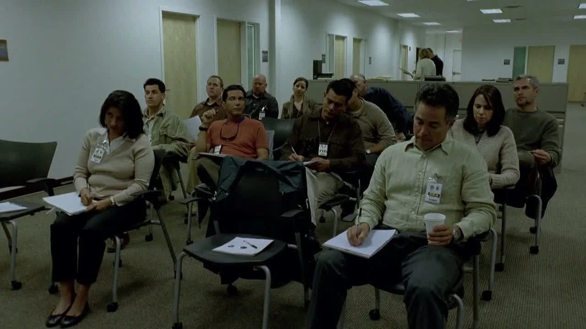
剧情事实汉克在简报会上介绍失踪者和异常高纯度制品，强调制造者具有很高的技术水平，并展示遗落面罩。 [1][2]
这一场为什么重要 · 个人解读
观众知道他们寻找谁，亲属却不知道。专业在课堂上得不到的认真评价，反而被执法机构说出。这不是对犯罪的认可，而是对危险的评估；两者恰好共享“能力被看见”的语言，构成尖锐反差。
因此 →一边是新制毒者的调查，一边是同一家庭的烧烤聚会。
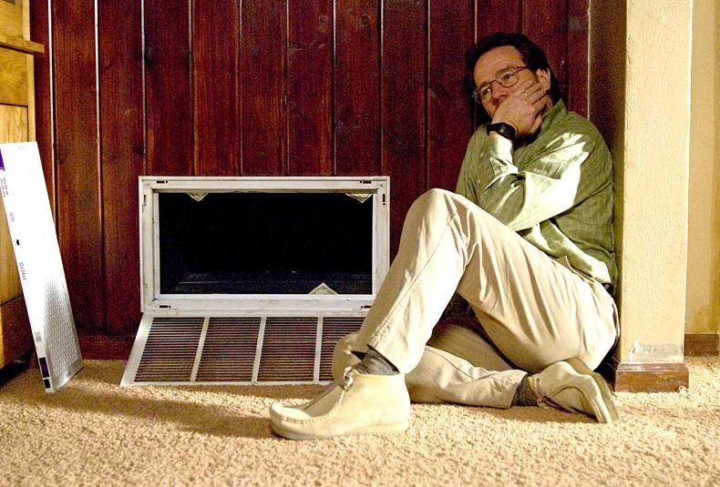
需要家人的时候，
为什么反而更孤独？
一场烧烤，一张治疗账单，两个想被理解的人。
他们回到家里，也遇到各自难以说清的距离。
剧透边界 剧透截至 S01E04，包含本集结尾
12 个剧情节点 · 8 位人物 · 04 组冲突沃尔特终于让亲属知道癌症，杰西则回到父母家寻求暂时的安稳。两条线都围绕“家”展开，却没有把家庭写成天然的避风港：帮助可能触痛尊严，戒心可能误认一次具体的事实，被期待优秀的人也可能藏着自己的秘密。
读这一集，跟住三条线疾病与尊严 / 旧标签与新事实 / 保护与报复
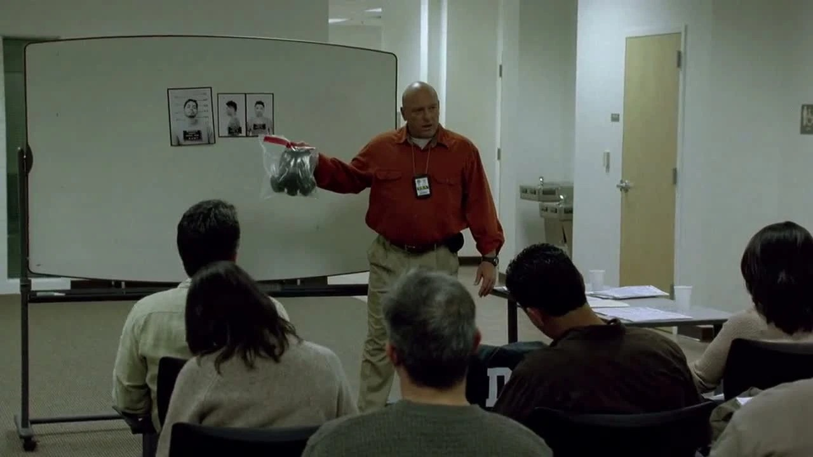
剧情事实DEA 开会分析制品的异常纯度与荒漠遗落的面罩，判断本地出现了具备高技术能力的新参与者。 [2]
个人解读职业认可与危险评估在这里使用相似的语言。我们知道“新参与者”是谁，汉克却仍把他当作需要照顾的亲属。两种认识之间的空隙，正是沃尔特还能继续隐藏的空间。
本页只使用截至 S01E04 已揭示的信息；下文包含本集结尾。
以两组家庭为线索合并相邻动作，保留本集先后与信息边界；关于治疗的描述仅限剧中情节。
病情终于进入家庭，秘密仍只说了一部分。

剧情事实汉克在简报会上介绍失踪者和异常高纯度制品，强调制造者具有很高的技术水平，并展示遗落面罩。 [1][2]
观众知道他们寻找谁，亲属却不知道。专业在课堂上得不到的认真评价，反而被执法机构说出。这不是对犯罪的认可，而是对危险的评估；两者恰好共享“能力被看见”的语言，构成尖锐反差。
因此 →一边是新制毒者的调查，一边是同一家庭的烧烤聚会。
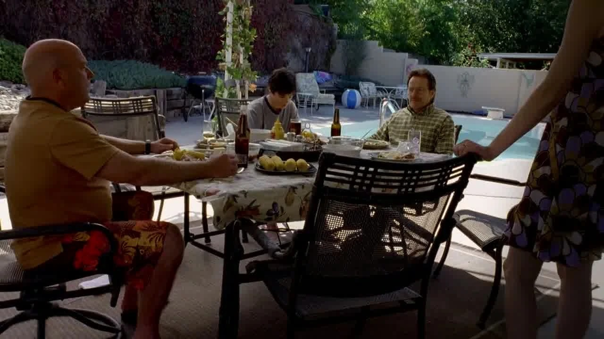
剧情事实家人聊起沃尔特与斯凯勒相识的往事，斯凯勒难以继续维持平静。沃尔特向在场亲属说明自己患了肺癌。 [1][2]
恋爱回忆唤起他们曾经主动靠近彼此的日子，随后病情打断这段温暖。斯凯勒的痛苦不只来自疾病，也来自丈夫让她独自守着消息、无法正常求助。公开并没有立即修复隐瞒，但至少改变了谁可以一起面对它。
因此 →亲属开始提出安排，病情从秘密变成共同议题。
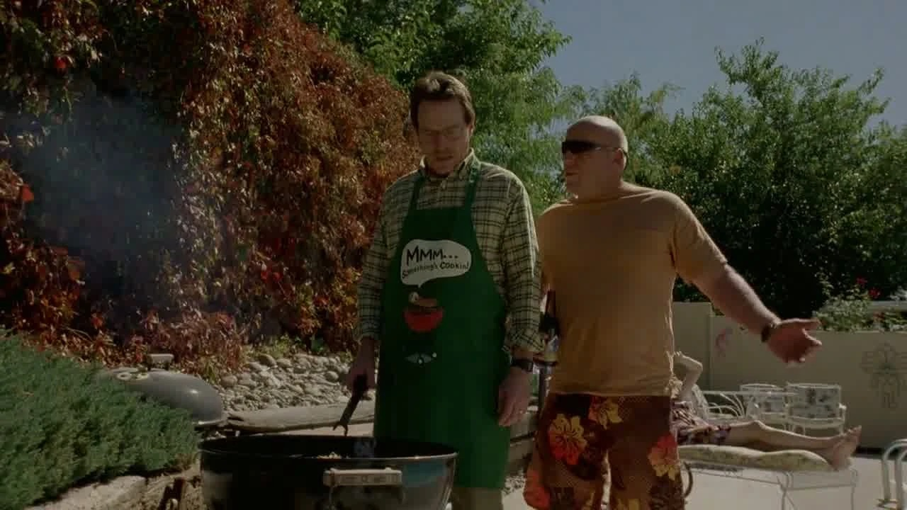
剧情事实汉克困惑于沃尔特迟迟不告诉大家，强调家人会一起度过，并向他承诺无论如何都会照顾他的家人。 [1][2]
承诺含有真诚的关心。对沃尔特而言，它也可能照见自己无法继续担任供养者的未来。这里不需要把汉克写成竞争者，冲突就已成立：别人想减轻责任，他却可能感到自己的位置正在被接过去。
因此 →帮助到来了，接受帮助的困难也随之出现。
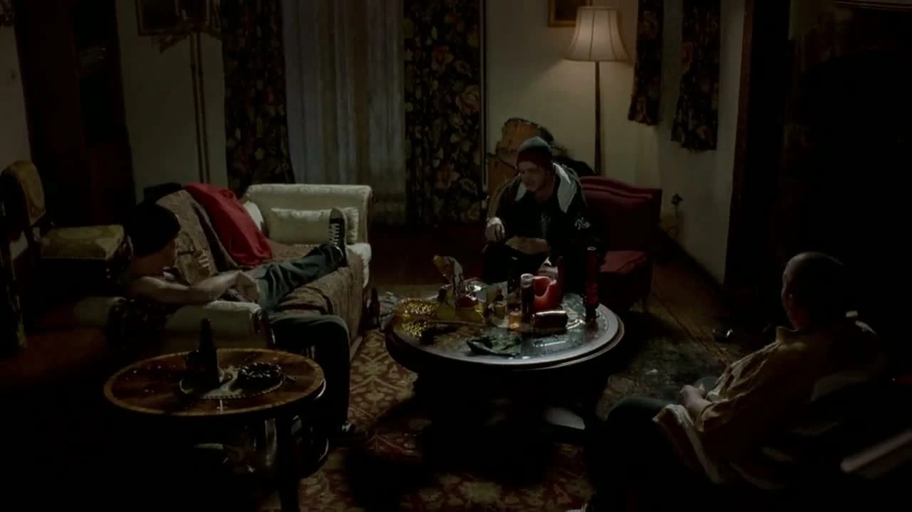
剧情事实朋友来找杰西索要制品。他先说想休息，怕继续使用会让自己偏执，最后仍加入；之后陷入恐惧，逃回父母家。 [1][2]
他说健康、停用和谈谈的时候，朋友觉得他在演一出无聊的戏。渴望被接纳使拒绝更难。这个客厅有陪伴的形式，却没有容纳脆弱的空间；回父母家因此不仅是找床睡，也是在寻找另一种可能的关系。
因此 →他离开充满后果的住处，回到童年的家庭。
亲人的关心真实存在，犯罪的过去却仍未进入共同讨论。另一边，杰西开始失去自己住处的安全感。
被爱与被相信，并不总在同一处。
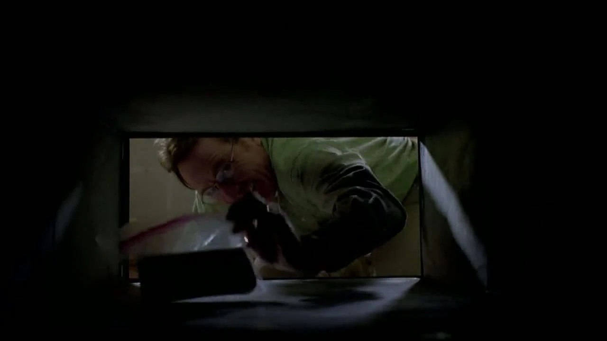
剧情事实斯凯勒安排进一步就诊，需先缴费用。沃尔特从通风口取出藏着的钱，准备支付；他也遇见了举止傲慢的肯。 [1][2]
“为家庭挣钱”开始拥有具体用途，因而更容易被他当成自我证明。通风口却让钱的来路始终留在画面里：它不是从正常工资账户自然到来。费用压力真实，也不意味着每个增加收入的方式都变得等价。
因此 →账单的紧迫，与对轻视自己的人的愤怒叠到一起。
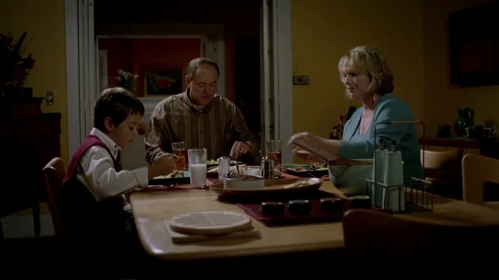
剧情事实杰西疲惫地出现在父母家，在旧卧室睡下。父母既提供照料，也讨论是否该再次让他留下，以及如何向弟弟解释。 [1][2]
家庭显然经历过不止一次同样的谈话。父母的戒心有历史，杰西此时的疲惫也有现实。剧集没有要求观众简单选边，而是让我们看到：一个人想回来，并不自动撤销他给别人造成过的失望。
因此 →短暂休息之后，他试着重新接上哥哥的身份。
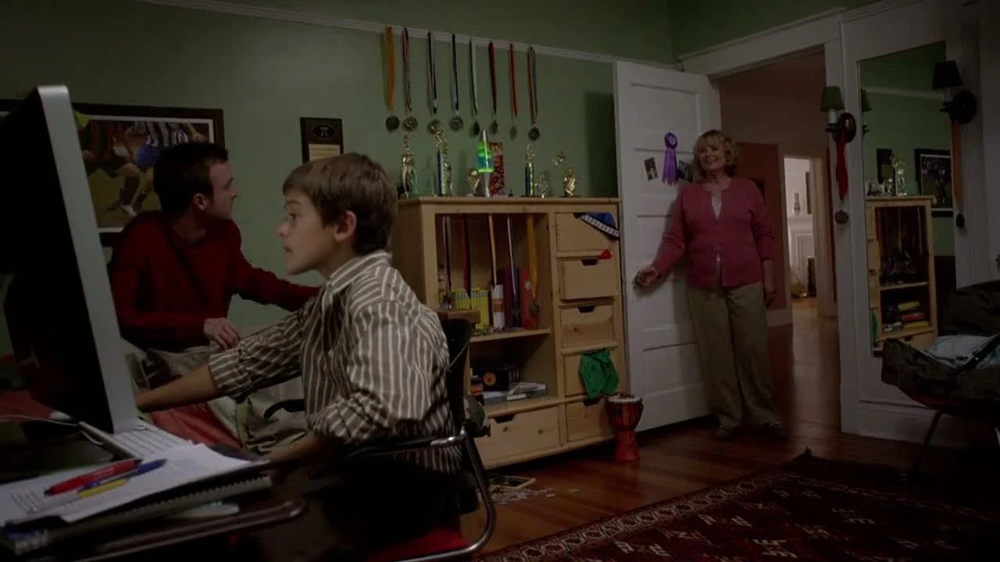
剧情事实杰西看弟弟的奖项，与他聊乐器和成长，提出可以给他建议。母亲查看两人相处后，杰西抱怨弟弟是最受宠的孩子，杰克却说父母总在谈哥哥。 [1][2]
两人都以为对方占据了家庭更多的位置。所谓被偏爱，在这里并不是一句可以立即证实的结论：杰西感到自己被排斥，杰克感到自己总被哥哥的问题遮住。兄弟间的玩笑让两种委屈短暂碰面。
因此 →杰西既想重新建立关系，也仍想得到自己有价值的证明。
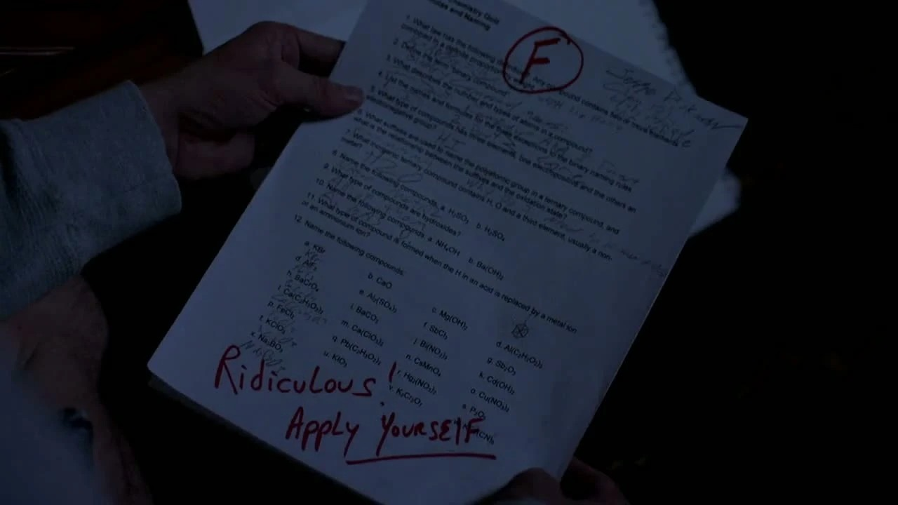
剧情事实杰西去找沃尔特，希望谈谈共同经历，并带来卖出制品后应分给他的现金。沃尔特怀疑他设局，要求他离开；杰西最终留下分成。 [1][2]
两人之间少见地出现了寻求情绪出口的邀请。沃尔特首先做风险判断，杰西最后只好用钱证明自己并非白来。这与他翻看的旧试卷互相照见：被老师看成失败者的人，仍在努力显示自己并非一无是处。
因此 →现金被留下，情绪交流却没有完成。
两人都返回家庭，却遇到不同形式的距离。资金、旧试卷和兄弟谈话把“有用”与“值得被接纳”连到一起。
同一种恐惧，可以成为保护，也可以变成伤害。
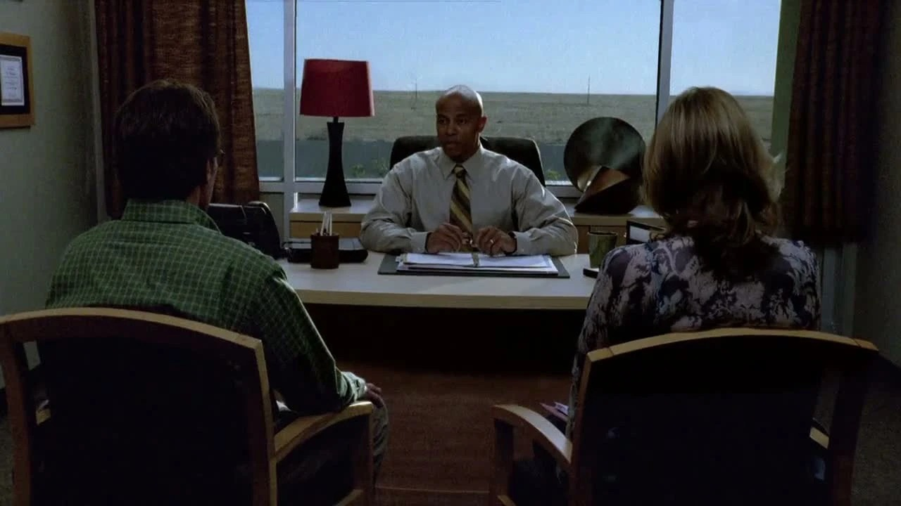
剧情事实医生说明病情严重，但仍有治疗方案，并介绍可能的副作用。治疗花费随即成为沃尔特与斯凯勒讨论的中心。 [1][2]
同一段说明，斯凯勒努力抓住可治疗的希望，沃尔特则看到身体代价与家庭债务。两种恐惧不能用“谁更冷静”简单排出高低。页面呈现的是角色听到什么、在担心什么，不据此替现实中的患者作医疗判断。
因此 →治疗是否开始，还需要他们面对价值与风险上的分歧。
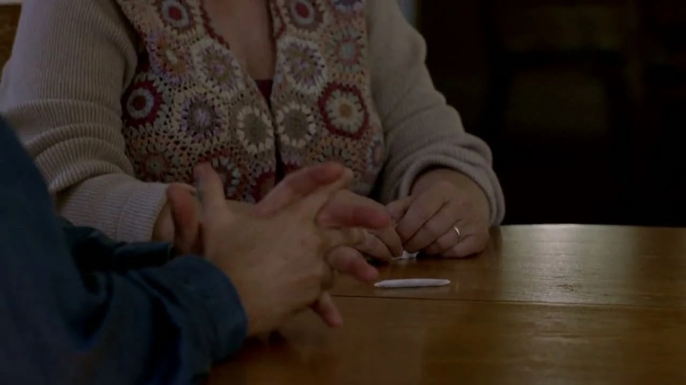
剧情事实父母发现大麻，认定杰西再次破坏家规，要求他离开。离开时杰克感谢他没有说出真相，并提出想拿回自己的东西。 [1][2]
这一反转并不抹去杰西以往的问题。它要求把对人的整体标签，与一次具体事件的证据分开。杰西不揭发弟弟，表现出难得的照顾；父母却仍只能在自己已经形成的模式里理解他。
因此 →他失去暂居的家，却没有失去每一次具体选择的能力。
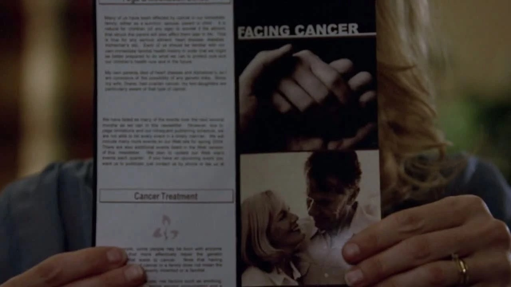
剧情事实沃尔特担心巨额开支会给家人留下债务，提出也许不该治疗。小沃尔特难以接受，用尖刻的话回应。 [1][2]
父亲以保护家庭解释迟疑，儿子却把迟疑听成不愿与他们一起争取。两人都围绕“家人”说话，承担的恐惧却不同。真正的困难不是找到一个更响亮的口号，而是让彼此有机会听见对方具体害怕什么。
因此 →沃尔特没有在这里完成沟通，而把愤怒带向另一个目标。
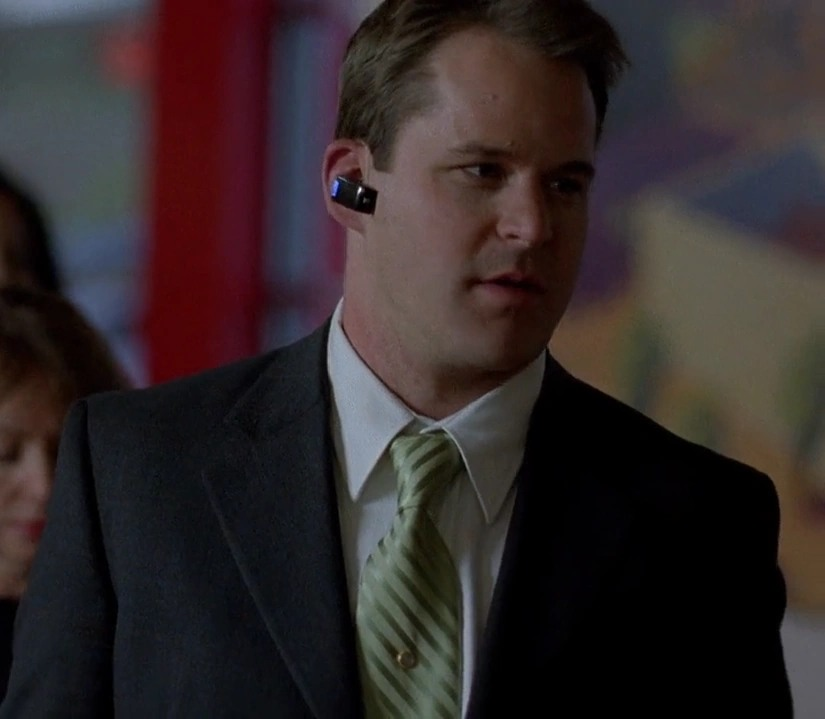
剧情事实沃尔特再次遇见此前令他恼火的肯，破坏对方的车并引发火灾，随后离开。 [1][2]
肯的粗鲁给观众提供了容易理解的愤怒对象，报复因此可能显得痛快。可这并没有改善疾病、收入或家庭沟通。它只是让沃尔特体验到，自己还能让一个轻视别人的人付出代价。能力开始被用于满足另一种需要。
因此 →本集把杰西的保护与沃尔特的破坏并置，留下两条不同的回应。
家庭在疾病与大麻事件中作出判断；沃尔特把失控感转成一次报复，杰西则在被驱离时保护弟弟。
沃尔特与杰西分别面对自己的家庭。两组关系并排呈现，不能用一次指控或一项成绩概括整个人。
亲属开始帮忙，杰西在自己的住处却越来越无法安定。

病人 / 仍在守住秘密的父亲
保住尊严与家庭的未来，也避免被疾病彻底规定身份。
化学能力、隐瞒收入来源的权力，以及对治疗是否开始的发言权。
向亲属公开癌症，接触治疗方案，收下杰西交来的钱，并报复令自己不快的肯。
他确实面对费用与死亡的压力，也把无处安放的愤怒转向一个具体目标。理解压力，不等于把报复认定为治疗或成长。
疾病从夫妻秘密变成家庭共同知道的事。
四组冲突分别看夫妻、父母与儿子、兄弟之间，以及沃尔特对无力感的回应。
斯凯勒把获得治疗机会理解成眼下最重要的任务，沃尔特则把副作用、账单和自己离开后的债务放在一起。费用压力不是一句“别想钱”就会消失的。
但他继续藏着收入的真实来源，也使共同讨论缺少必要信息。可以尊重病人的感受，同时看清这段关系仍受到此前隐瞒的影响；理解治疗中的选择困难，不等于认可他用犯罪替家庭作决定。
阅读边界：这里只分析剧中分歧，不将剧情中的诊疗说明当作现实建议。
把短句放回发生的场景。对白不是人物全部动机的证明，也可能是他选择让别人听见的那一部分。
We're family.我们是一家人。中文自译
病情公开后，汉克强调大家会一起面对。
支持确实存在。困难也许开始从“有没有人愿意帮忙”，转向“他能够如何理解和接受帮忙”。
英文据本集对白转录核对，共 14 个词；中文为本页自译。图片用于提示人物与场景，具体镜头边界见图注。
物件、空间和声音怎样让人物的变化变得可见。以下为画面观察与个人解读。
聚会仍在进行，病情已经无法被日常盖住。个人解读：小失误让尚未说出口的巨大压力先显形。
回到相关场景 ↗通风口既是藏匿空间，也是费用的现实来源。个人解读：犯罪收入被用于家庭，不会因此让来路从画面中消失。
回到相关场景 ↗老师的批语留在杰西的童年空间。个人解读：旧评价与他现在寻求认可的行动相接，但不能据此给他的一切选择开脱。
回到相关场景 ↗杰克有漂亮的履历，也有不愿让父母知道的事。个人解读：视觉上的成功，不是一个人全部生活的说明书。
回到相关场景 ↗斯凯勒读希望，沃尔特看代价。个人解读：同一个治疗过程，可以让家人各自听见截然不同的未来。
回到相关场景 ↗父母不知杰克的事实，家人不知沃尔特的犯罪。个人解读：这一集反复要求观众区分形象、判断与已核实的行为。
回到相关场景 ↗这一集把日常关系放回故事中心。疾病不是只属于一个人的事件，旧日失望也不是可以立刻翻页的历史；每个人都带着自己的经验理解当下。
最需要保留的分寸，是既看见父母和家人的顾虑，也承认具体行动可能超出标签：杰西会保护弟弟，沃尔特也会把压力变成对别人的破坏。
回看那次没有被家人看见的保护 ↗剧透截至第一季第4集，包含本集结尾。不涉及后续集数或其他作品的揭示。 · 本篇止于此，不预告后续情节。